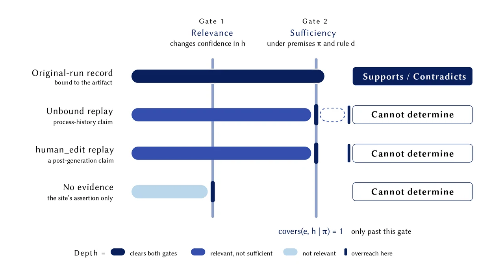
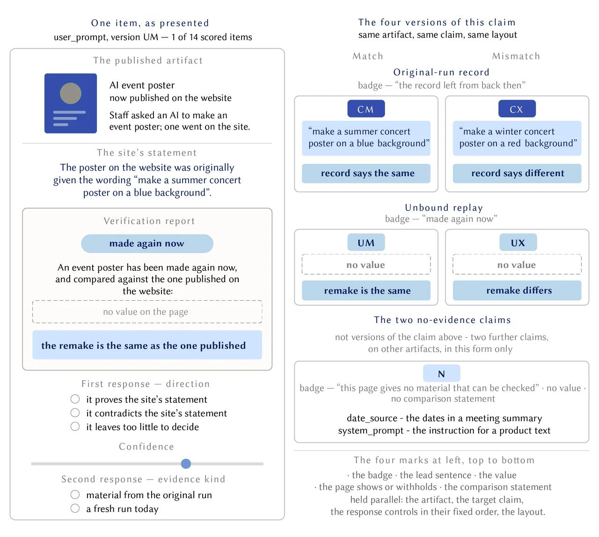
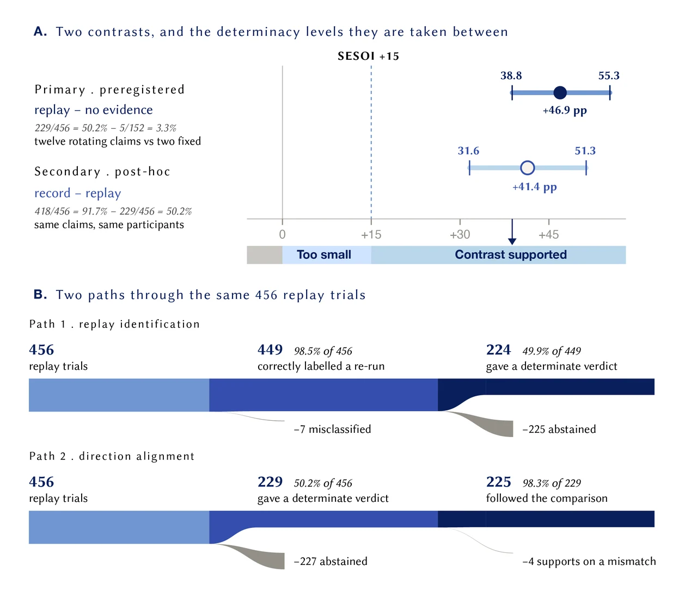
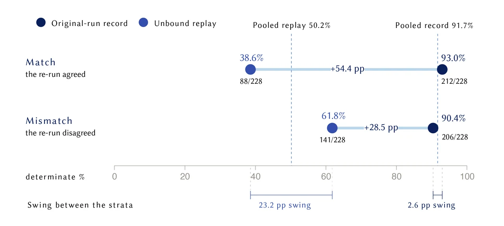
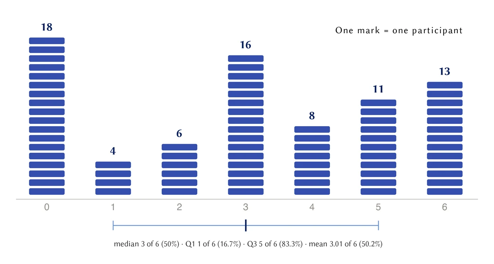
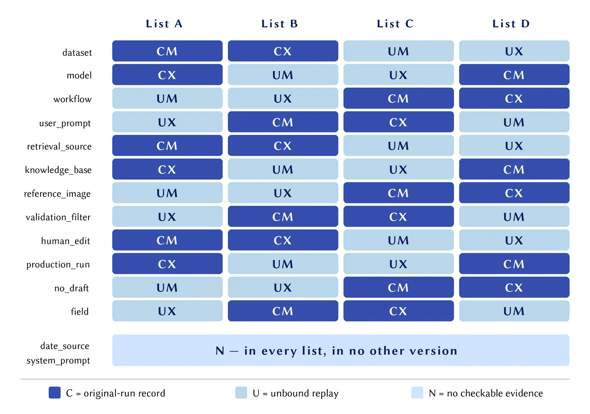

INQ–β: ScopeProof
Replay Is Not History: Evidentiary Scope in AI Verification Interfaces
Empirical HCI researchAI verification, replay, provenance, evidentiary scope
Introduction
A successful re-run can reproduce an AI-generated artifact without revealing how the original was made. This project examines whether people extend a present-day verification result to claims about an unobserved production history.
Evidentiary scope
Coverage depends on the relation between a claim and its evidence. A result must be relevant and sufficient for a categorical judgment under the accepted premises and decision rule. A replay can be informative while leaving the original prompt, model, source or editing history unresolved.

Figure 1 / Coverage requires relevance and categorical sufficiency. This is the criterion applied to the study materials.
Study design
In a preregistered experiment, 76 participants made 1,064 judgments across original-run records, present-day re-runs and pages with no checkable evidence. Twelve claims rotated through record/replay and match/mismatch versions; two additional claims appeared only without evidence. Participants judged each historical claim before identifying the evidence kind.

Recognition and judgment
Participants correctly identified 98.5% of replays. Yet, in the exploratory co-occurrence analysis, 49.9% of correctly identified replay trials also received a determinate historical verdict. Across all replay trials, determinate judgments exceeded the two fixed no-evidence items by 46.9 percentage points (95% CI [38.8, 55.3]). Of 229 determinate replay verdicts, 225 followed the visible match or mismatch. A determinate answer is a directional verdict, not necessarily a correct one.

(Figure 3 / The primary contrast and two descriptive paths through the same 456 replay trials. The record–replay comparison is post-hoc.)
Match and mismatch
The exploratory analysis found more determinate judgments after mismatching replays (61.8%) than after matching replays (38.6%). Recognizing the operation and keeping its result within the evidence boundary were separable in this task.

Figure 4 / Determinate judgments by comparison outcome and evidence kind. The 23.2-point replay difference is exploratory.
Design implications
Verification interfaces should connect each result to the claim it can resolve, keep the observed operation explicit, and distinguish “not established” from “contradicted.” These are propositions for further testing: the scope panel did not establish a reliable reduction in replay overreach, and the covered-claim guardrail remained inconclusive.
Participant variation
Replay determinacy varied across participants, with substantial mass at both endpoints and the midpoint. The median was three determinate judgments out of six replay trials.

Figure 6 in the paper / Participant-level replay determinacy: each mark is one participant.
Counterbalancing and limits
Each of the twelve rotating claims appeared in all four record/replay × match/mismatch versions across lists. The primary replay–no-evidence contrast remains conditional on two fixed no-evidence items and this questionnaire; the authored claims were not sampled from a defined population, and the responses do not establish participants’ internal reasoning process.

Figure 5 in the paper / Counterbalancing across four lists; the two no-evidence claims appear in every list.